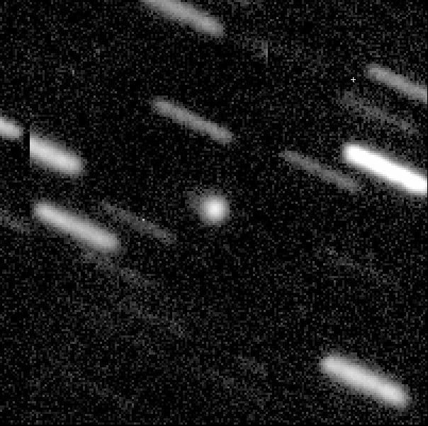
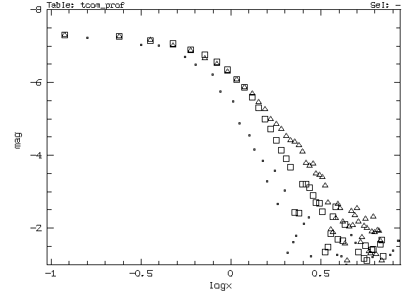

C.Delahodde and O.Hainaut, 2000-aug-29.
Figure 1: a 30min composite of 3 frames centered on 2000
OF8. North is up, East is left. The field is 50" across. The greyscale
is logarithmic.

Figure 2: radial profile of the object. The triangles correspond
to the average profile in the NE quadrant, where the coma is most visible;
the squares are from the SW quadrant. The dots correspond to the profile
of a field star. X scale is in log(arcsec), Y in arbitrary magnitudes/pix2.

CON O. Hainaut, ESO/Chile, Casilla 19001, Santiago, Chile
CON [ohainaut@eso.org]
OBS C. E. Delahodde, O. R. Hainaut
MEA O. R. Hainaut
TEL 2.2-m f/8 reflector + CCD
NET USNO-A1
ACK ESO-B08
K00O08F C2000 08 29.00296 20
04 23.84 +12 50 49.5
18.5 R 809
K00O08F C2000 00 00.01387 20
04 22.93 -12 50 55.6
809
K00O08F C2000 00 00.05878 20
04 19.04 -12 51 21.5
809